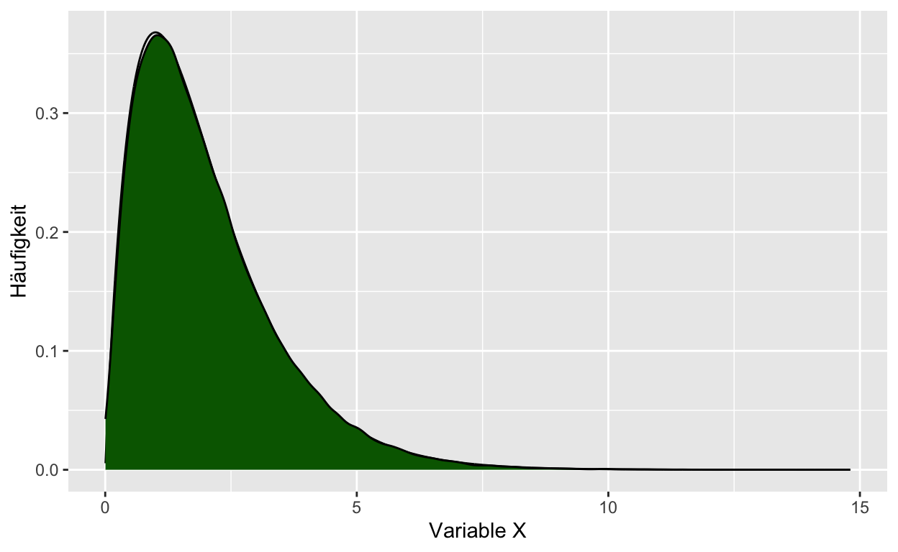
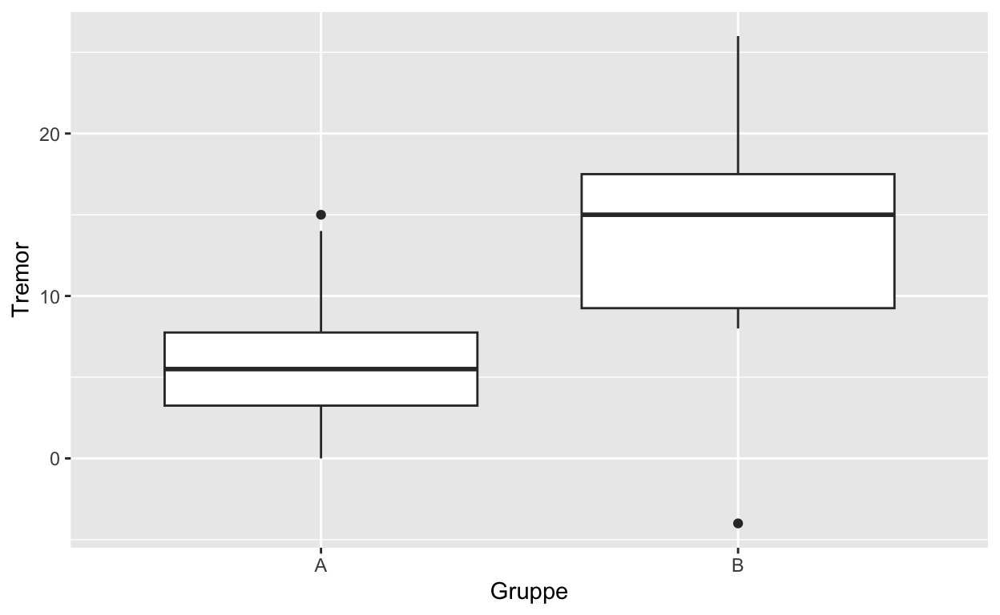

Willkommen
Was können Sie von dieser Übung erwarten?
Im Folgenden finden Sie Übungsaufgaben zur Vorlesung Statistik I (B-P 9.3-VO) im Modul Quantitative Methoden I (B-P 9.3).
Dazu verwenden wir das Paket learnr.
Dieses Paket gibt uns u.a. die Möglichkeit, R Aufgaben
direkt über Ihren Browser zu üben. Sie müssen dafür die Programme
R und RStudio nicht auf dem eigenen Computer
installieren.
Zusätzlich finden Sie im Rahmen der Lektionen Quizaufgaben, um Ihr Wissen zu überprüfen.

Einheit 1 - Grundlagen der Datenanalyse
Einheit 2 - Skalenniveaus und statistische Kennwerte
Einheit 3 - Statistische Kennwerte (2)
Sie analysieren und visualisieren Daten und erhalten folgende Verteilung:

Einheit 4 - Visualisierung
Welche Aussagen, bezogen auf die nachfolgende Grafik können Sie treffen? 
Einheit 5 - Stichprobe, Grundgesamtheit - Wahrscheinlichkeitstheorie und Verteilungen
Übungen zur z-Standardisierung
Einheit 6 - Schätzungen und Stichprobenfehler
Einheit 7 - Hypothesen und Hypothesentests
Weitere Übungsaufgaben
Einheit 8 - t-Test
Weitere Übungsaufgaben Hypothesentests
Einheit 9 - Korrelation
Einheit 10 - Verfahren für Nominaldaten - χ2 Test
Einheit 11 - Effektstärke und Power